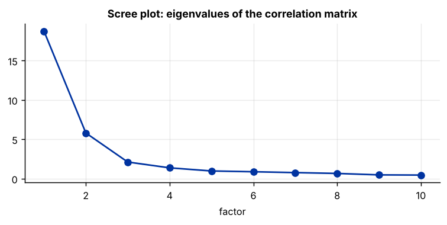
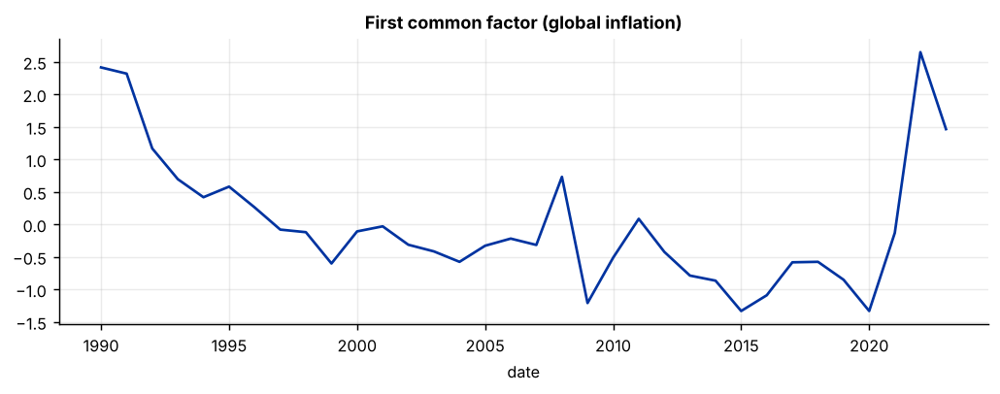

Step 1The question and the model
How much of the movement of inflation in 34 countries is a common, global movement? The approximate factor model writes each standardised series \(i\) as
where \(F_t\) are \(r\) common factors, \(\lambda_i\) are the loadings and \(e_{it}\) is a country-specific component. The factors are estimated by principal components: \(\hat F\) are the first \(r\) principal components of the standardised data, scaled so that \(\hat F'\hat F/T = I\). They are consistent for the space spanned by the true factors when both \(N\) and \(T\) are large (Bai and Ng, 2002). The factors are identified only up to rotation, so their sign and scale are arbitrary, and a factor means what its loadings say.
The number of factors \(r\) is chosen by the criteria of Bai and Ng,
where \(V(k)\) is the average squared residual with \(k\) factors and \(g\) is a penalty; the three versions (\(IC_{p1}, IC_{p2}, IC_{p3}\)) differ in \(g\). Choose the \(k\) with the smallest value. The Kaiser rule (keep factors with an eigenvalue above one for standardised data) is a rough check.
Before you estimate anything
- Use stationary series. Growth rates, inflation or changes; factors of trending series pick up the trends.
- Standardise. Otherwise the series with the largest variance dominates.
- Check the size of the panel. The criteria work well when \(N\) and \(T\) are both large (above about 30 here); with a small \(N\) they are unreliable.
How to write it: methods sentence
We extract common factors from the standardised inflation rates of 34 countries by principal components (Stock and Watson, 2002), and choose the number of factors with the information criteria of Bai and Ng (2002).
Step 2Load the data
import warnings; warnings.filterwarnings("ignore")
import numpy as np, pandas as pd
import matplotlib.pyplot as plt
from sklearn.decomposition import PCA
d = pd.read_csv("inflation_countries.csv").set_index("date")
T, N = d.shape
print(f"{T} years ({d.index[0]}–{d.index[-1]}), {N} countries")
print("median country: mean %.1f%%, sd %.1f" % (d.mean().median(), d.std().median()))
print("largest averages:", d.mean().sort_values().tail(3).round(1).to_dict())
Z = (d - d.mean()) / d.std(ddof=0)34 years (1990–2023), 34 countries
median country: mean 2.7%, sd 2.0
largest averages: {'HUN': 10.3, 'COL': 10.3, 'EGY': 10.7}How to read it
The panel has 34 years and 34 countries, from the large advanced economies to emerging markets. Average inflation differs a lot across countries, which is why we standardise: otherwise countries with the highest and most volatile inflation would dominate the factors.
Step 3Step 1: How many factors?
pca = PCA().fit(Z.values); ev = pca.explained_variance_ * (T - 1) / T
def V(k):
if k == 0: return (Z.values ** 2).mean()
Fh = pca.transform(Z.values)[:, :k]; L = pca.components_[:k].T
return ((Z.values - Fh @ L.T) ** 2).mean()
g1 = (N + T) / (N * T) * np.log(N * T / (N + T)); g2 = (N + T) / (N * T) * np.log(min(N, T)); g3 = np.log(min(N, T)) / min(N, T)
rows = [[k, round(V(k), 3), round(np.log(V(k)) + k * g1, 3), round(np.log(V(k)) + k * g2, 3), round(np.log(V(k)) + k * g3, 3), round(100 * ev[:k].sum() / ev.sum(), 1)] for k in range(0, 7)]
tab = pd.DataFrame(rows, columns=["k", "V(k)", "IC_p1", "IC_p2", "IC_p3", "cum. % variance"]); print(tab.to_string(index=False))
print("\nminimum of IC_p1 at k =", int(tab.loc[tab.IC_p1.idxmin(), "k"]), "; IC_p2 at k =", int(tab.loc[tab.IC_p2.idxmin(), "k"]), "; IC_p3 at k =", int(tab.loc[tab.IC_p3.idxmin(), "k"]))
print("eigenvalues > 1:", int((ev > 1).sum()))
fig, ax = plt.subplots(figsize=(6, 3)); ax.plot(range(1, 11), ev[:10], "o-"); ax.set_title("Scree plot: eigenvalues of the correlation matrix"); ax.set_xlabel("factor"); plt.tight_layout(); plt.show()k V(k) IC_p1 IC_p2 IC_p3 cum. % variance 0 1.000 0.000 0.000 0.000 0.0 1 0.449 -0.635 -0.594 -0.698 55.1 2 0.278 -0.946 -0.865 -1.072 72.2 3 0.216 -1.032 -0.909 -1.221 78.4 4 0.176 -1.071 -0.908 -1.323 82.4 5 0.147 -1.081 -0.877 -1.396 85.3 6 0.122 -1.105 -0.861 -1.483 87.8 minimum of IC_p1 at k = 6 ; IC_p2 at k = 3 ; IC_p3 at k = 6 eigenvalues > 1: 4

How to read it
The first factor explains 55% of the variance and the second 17%, and then the eigenvalues fall quickly: 2.1, 1.4, 1.0 for the third to fifth. The criteria do not agree. IC_p2, the most conservative, chooses 3 factors; IC_p1 and IC_p3 choose 6, the largest number allowed, which means that they do not find a minimum and should not be trusted with a panel of this size; the Kaiser rule gives 4. The scree plot shows the main break after the first factor and a smaller one after the second. We use one global factor for the interpretation and check results with 3.
Step 4Step 2: The factors and what they mean
r = 3
F = pca.transform(Z.values)[:, :r] / np.sqrt(ev[:r]) # unit-variance factors
F = pd.DataFrame(F, index=d.index, columns=[f"F{i + 1}" for i in range(r)])
L = pd.DataFrame(pca.components_[:r].T * np.sqrt(ev[:r]), index=d.columns, columns=F.columns)
sign = np.sign(L["F1"].mean()); F["F1"] *= sign; L["F1"] *= sign # make the first factor load positively on average
fit = F.values @ L.values.T; R2 = 1 - ((Z.values - fit) ** 2).sum(0) / (Z.values ** 2).sum(0)
print("average loading on F1: %.2f; share of countries with a positive loading: %.0f%%" % (L["F1"].mean(), 100 * (L["F1"] > 0).mean()))
print("highest loadings on F1:", L["F1"].sort_values().tail(4).round(2).to_dict())
print("lowest loadings on F1: ", L["F1"].sort_values().head(4).round(2).to_dict())
print("R-squared of the 3 factors by country (median, min, max):", np.round([np.median(R2), R2.min(), R2.max()], 2), " lowest in", d.columns[R2.argmin()])
fig, ax = plt.subplots(figsize=(8, 3.2)); F["F1"].plot(ax=ax); ax.set_title("First common factor (global inflation)"); plt.tight_layout(); plt.show()average loading on F1: 0.72; share of countries with a positive loading: 100%
highest loadings on F1: {'PRT': 0.9, 'ESP': 0.91, 'GBR': 0.92, 'ITA': 0.96}
lowest loadings on F1: {'IDN': 0.03, 'IND': 0.36, 'EGY': 0.41, 'MEX': 0.49}
R-squared of the 3 factors by country (median, min, max): [0.85 0.48 0.93] lowest in MYS
How to read it
The first factor loads positively on all 34 countries (average loading 0.72), which is the mark of a global inflation factor. It loads most on Italy (0.96), the United Kingdom (0.92), Spain and Portugal (0.91 and 0.90), and least on Indonesia (0.03), India (0.36), Egypt (0.41) and Mexico (0.49), where domestic factors dominate. The three factors explain most of the variance of each country: the median R-squared is 0.85, from 0.48 (Malaysia) to 0.93. The second and third factors have loadings of both signs and are rotation-dependent: do not give them a name without looking at the loadings.
Step 5Step 3: Is the factor structure stable?
h = T // 2
for lab, Zs in (("1990–2006", Z.iloc[:h]), ("2007–2023", Z.iloc[h:])):
e = np.linalg.svd(Zs.values, compute_uv=False) ** 2 / len(Zs)
print(f"{lab}: first factor {100 * e[0] / e.sum():.1f}% of the variance; first three {100 * e[:3].sum() / e.sum():.1f}%")
# correlation of the full-sample first factor with the first factor of each half
for lab, Zs in (("1990–2006", Z.iloc[:h]), ("2007–2023", Z.iloc[h:])):
p_ = PCA(1).fit(Zs.values); print(lab, "loadings correlate", round(abs(np.corrcoef(p_.components_[0], L["F1"].values)[0, 1]), 2), "with the full-sample loadings on F1")1990–2006: first factor 59.9% of the variance; first three 80.7% 2007–2023: first factor 69.0% of the variance; first three 85.9% 1990–2006 loadings correlate 0.43 with the full-sample loadings on F1 2007–2023 loadings correlate 0.52 with the full-sample loadings on F1
How to read it
The first factor explains 60% of the variance in the first half and 69% in the second, so the global component becomes more important. But the pattern of loadings is not very stable: the loadings of each half correlate only 0.43 and 0.52 with the full-sample loadings. The existence of a common component is robust, but which countries load on it most changes, so avoid strong statements about individual countries from the full-sample loadings.
Step 6What to report in the paper
Report the standardisation, the number of factors and the criteria used, the share of variance explained, the loadings (or a figure of them), the factor over time, and the stability across subsamples. State that the factors are defined up to rotation.
How to write it: results
The first principal component of inflation in 34 countries explains 55% of the variance, and the first three explain 78%. The Bai-Ng criterion IC_p2 selects three factors. The first loads positively on almost all countries, so we interpret it as a global inflation factor; its share of the variance rises from 60% in 1990–2006 to 69% in 2007–2023, although the pattern of country loadings differs between the two periods (correlation 0.43 and 0.52 with the full-sample loadings).
Step 7Common mistakes
Mistakes to avoid
- Extracting factors from trending series. The first factor is then a common trend.
- No standardisation. The most volatile series dominate.
- Naming the factors without looking at the loadings. The rotation is arbitrary.
- Trusting the information criteria with a small panel. Check against the scree plot.
- Using estimated factors as if they were observed in a regression. For inference use a method that accounts for the estimation error, or bootstrap.
- Ignoring the sample split. A factor structure that changes needs a different model.
- Using all the variables regardless of quality. Series with many missing values or breaks distort the factors.
- Confusing the number of factors with the number of shocks. They can differ.